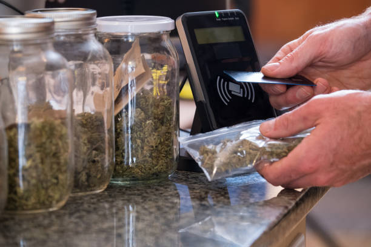

The effectiveness of cannabis as a treatment for PTSD among Florida residents
Posted by on 2024-06-18
Post-Traumatic Stress Disorder (PTSD) is a debilitating condition that affects many individuals in Florida and across the country. Those suffering from PTSD often experience symptoms such as flashbacks, nightmares, anxiety, and depression, which can have a significant impact on their daily lives. While traditional treatments such as therapy and medication can be effective for some individuals, there is growing interest in the potential benefits of cannabis as a treatment for PTSD.
Cannabis has been used for centuries for its medicinal properties, and research suggests that it may be an effective treatment for PTSD symptoms. The plant contains compounds known as cannabinoids that interact with the body's endocannabinoid system, which plays a role in regulating mood, memory, and stress response. Studies have shown that cannabis can help to alleviate symptoms of PTSD by reducing anxiety, improving sleep quality, and enhancing overall well-being.
In Florida, where medical marijuana has been legalized for qualifying patients since 2016, many individuals with PTSD are turning to cannabis as a treatment option. Advocates argue that cannabis offers a natural alternative to traditional medications with fewer side effects and less risk of addiction. They point to anecdotal evidence from patients who report significant improvements in their symptoms after using cannabis.
However, critics raise concerns about the lack of scientific evidence supporting the use of cannabis for PTSD. They argue that more research is needed to fully understand how cannabis interacts with the brain and body and to determine its long-term effects on mental health. Additionally, there are legal barriers to accessing medical marijuana in some states, including Florida, which may limit its availability to those who could benefit from it.
Despite these challenges, interest in using cannabis as a treatment for PTSD continues to grow among Florida residents. As more research is conducted and laws evolve to expand access to medical marijuana, it is important for healthcare providers and policymakers to consider the potential benefits of cannabis for individuals with PTSD. By exploring alternative treatment options like cannabis, we may be able to improve outcomes for those struggling with this complex and challenging condition.
In conclusion, the effectiveness of cannabis as a treatment for PTSD among Florida residents remains a topic of ongoing debate. While there is promising evidence suggesting that cannabis may offer relief from symptoms of PTSD, more research is needed to fully understand its potential benefits and risks. As attitudes toward medical marijuana continue to shift and laws change to accommodate patient needs, it is essential that we remain open-minded about alternative treatments like cannabis in order to best support those living with PTSD in our communities.